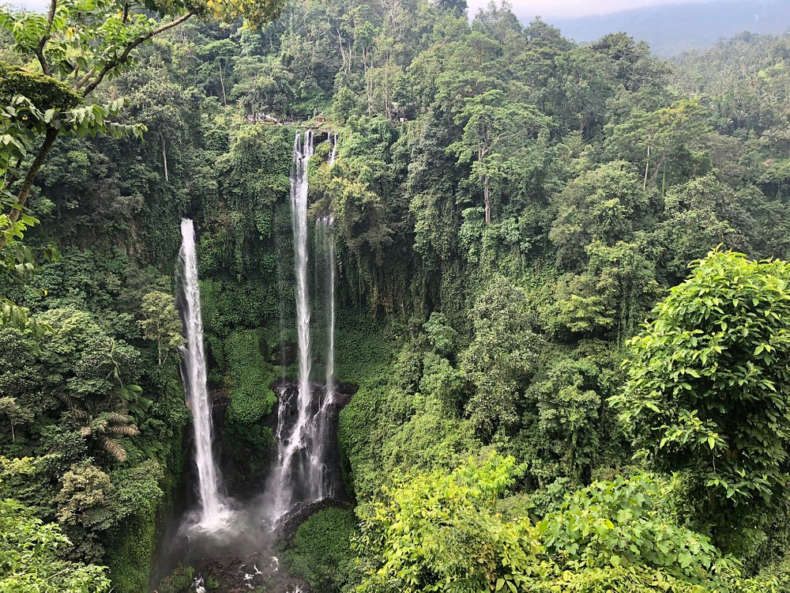
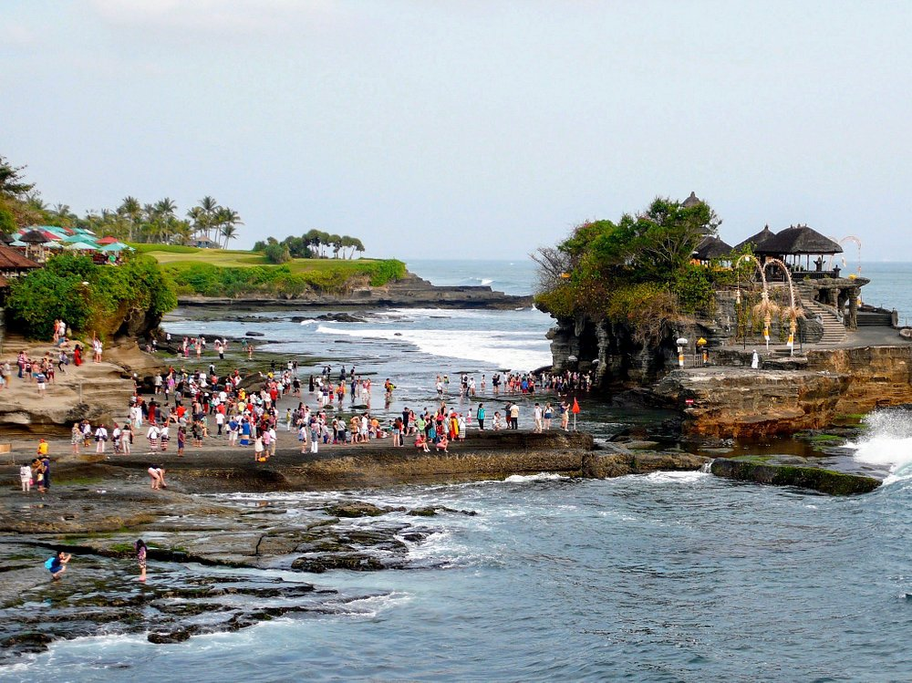

Pantai Kelingking, yang terletak di Nusa Penida, Bali, adalah salah satu destinasi paling terkenal dan ikonik di Indonesia. Pantai ini dinamai "Kelingking" karena formasi tebing karangnya yang unik dan curam menyerupai bentuk jari kelingking atau, yang lebih populer, menyerupai bentuk kepala Tyrannosaurus Rex (T-Rex) yang menjorok ke laut. Pemandangan dari atas tebing menawarkan panorama samudra biru turquoise yang dramatis dan pantai berpasir putih yang tersembunyi di bawahnya. Meskipun menuruni tebing ke pantai membutuhkan trekking yang ekstrem, pemandangan dari viewpoint utamanya sudah cukup ikonik dan sangat layak untuk difoto.
Waktu Operasional
Pura Tanah Lot terbuka untuk kunjungan setiap hari
Jam Buka Reguler: 08.00 - 17.00 WITA.
Disarankan datang pagi (sebelum pukul 10.00) untuk menikmati suasana yang masih sepi dan menghindari panas terik, terutama jika Anda berencana melakukan trekking ke dasar air terjun.
Harga Tiket Masuk
Harga tiket masuk tergantung pada siapa orang yang membeli tiket:
- Wisatawan Domestik (WNI): Dewasa: Sekitar Rp 30.000 per orang.
- Wisatawan Mancanegara (WNA): Dewasa: Sekitar Rp 75.000 per orang.
Aktivitas Utama
3 Aktivitas Utama di Pura Tanah Lot:
- Menyaksikan Matahari Terbenam (Sunset Viewing): Ini adalah daya tarik nomor satu. Datanglah di sore hari, idealnya sekitar pukul 17.00, untuk mendapatkan tempat terbaik. Pemandangan siluet pura di atas karang dengan latar belakang langit jingga keemasan adalah momen paling ikonik di Bali.
- Menyeberang ke Pura Batu Bolong: Selain Pura Tanah Lot, Anda akan menemukan Pura Batu Bolong di dekatnya, yaitu pura yang berdiri di atas tebing dengan lubang besar di bawahnya (mirip jembatan alami). Pura ini menawarkan spot foto yang fantastis dan pemandangan laut yang dramatis.
- Mendapatkan Air Suci dan Melihat Ular Suci (Saat Air Surut): Ketika air laut surut, Anda dapat berjalan mendekat ke dasar pura utama. Di sana, terdapat gua kecil yang dijaga oleh pemangku pura, di mana Anda dapat membasuh wajah dengan Air Suci (Tirta) untuk mendapatkan berkat. Di lokasi yang sama, Anda juga bisa melihat beberapa Ular Laut Suci yang dipercaya sebagai penjaga pura.
Fasilitas dan Layanan
Fasilitas dan layanan yang tersedia untuk kenyamanan pengunjung meliputi:
- Pemandu Lokal Resmi
- Area Parkir: Area parkir yang cukup luas tersedia untuk kendaraan roda dua dan roda empat.
- Toilet/Kamar Mandi: Tersedia di area parkir/loket awal untuk buang air atau berganti pakaian.
Peta Pantai Kelingking

Pura Ulun Danu
📌 Bali

Air Terjun Sekumpul
📌 Bali

Gunung Batur
📌 Bali

Pura Tanah Lot
📌 Bali